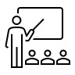

University of Bern
Economics of Education (Master level)
Autumn 2025
Autumn 2024 (Recognition of excellence in teaching)
Autumn 2023 (Recognition of excellence in teaching)
Autumn 2022 (Recognition of excellence in teaching)
Past: University of St.Gallen and University of Kiel
Econometrics I (Master level, University of St.Gallen, 2017-2020).
Introduction to Economics (Bachelor level, University of Kiel, 2015-2016).
Introduction to Econometrics (Bachelor level, University of Kiel, 2014-2016).